| Tratamiento | Réplica | Talla | Peso |
|---|---|---|---|
| 0 | 1 | 10.5 | 13 |
| 0 | 1 | 9.0 | 10 |
| 0 | 1 | 10.6 | 15 |
| 0 | 1 | 10.5 | 15 |
| 0 | 1 | 9.8 | 12 |
| 0 | 1 | 9.4 | 9 |
1. Preparación y exploración de datos
Tabla. Resumen de las 6 primeras filas de la base de datos.
Tabla. Estadísticos descriptivos para las tallas
| Tratamiento | n | prom_Talla | desv_Talla |
|---|---|---|---|
| 0 | 313 | 14.90511 | 3.350417 |
| 0.15 | 313 | 15.12236 | 4.843845 |
| 0.2 | 308 | 14.83182 | 3.103139 |
| CONTROL | 314 | 13.85764 | 2.782985 |
2. Pruebas de supuestos
2.1 Normalidad de residuos
No se cumple el supuesto de normalidad para tallas ni para pesos (valor p < 0.05).
# A tibble: 1 × 3
variable statistic p.value
<chr> <dbl> <dbl>
1 residuals(mod_talla) 0.822 4.25e-35# A tibble: 1 × 3
variable statistic p.value
<chr> <dbl> <dbl>
1 residuals(mod_peso) 0.956 5.22e-192.2 Homogeneidad de varianzas
No se cumple el supuesto de homogeneidad para tallas ni para pesos (valor p < 0.05).
Levene's Test for Homogeneity of Variance (center = median)
Df F value Pr(>F)
group 3 3.8785 0.008944 **
1244
---
Signif. codes: 0 '***' 0.001 '**' 0.01 '*' 0.05 '.' 0.1 ' ' 1Levene's Test for Homogeneity of Variance (center = median)
Df F value Pr(>F)
group 3 14.522 2.664e-09 ***
1244
---
Signif. codes: 0 '***' 0.001 '**' 0.01 '*' 0.05 '.' 0.1 ' ' 12.3 Independencia de los residuales del Anova
Nota: asume un diseño completamente aleatorizado.
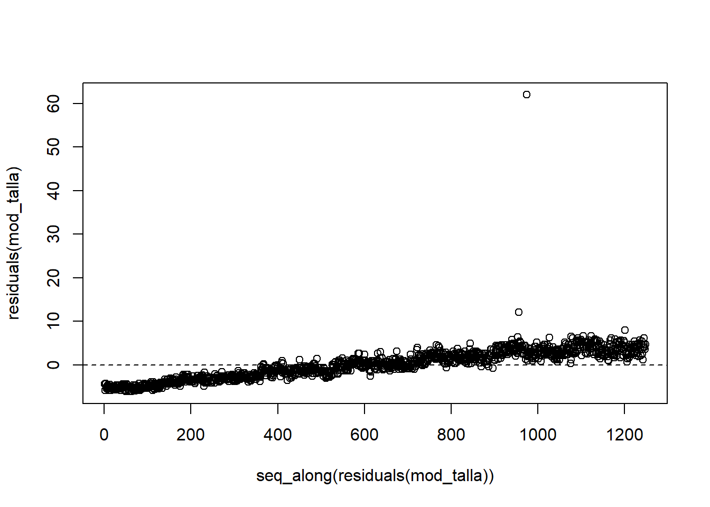
3. ANOVA a una vía y post-hoc de Tukey
Al incumplirse los supuestos, este Anova pierde capacidad de resolución para encontrar diferencias entre tratamientos. Sin embargo se ejecuta y muestra diferencias entre tallas y pesos, especialmente Control vs. tratamiento al 15%.
Tukey multiple comparisons of means
95% family-wise confidence level
Fit: aov(formula = Talla ~ Tratamiento, data = df)
$Tratamiento
diff lwr upr p adj
0.15-0 0.21725240 -0.5248925 0.9593973 0.8753707
0.2-0 -0.07329364 -0.8184444 0.6718571 0.9943157
CONTROL-0 -1.04746851 -1.7890223 -0.3059148 0.0016531
0.2-0.15 -0.29054604 -1.0356968 0.4546047 0.7476423
CONTROL-0.15 -1.26472091 -2.0062747 -0.5231671 0.0000733
CONTROL-0.2 -0.97417487 -1.7187369 -0.2296129 0.0043684 Tukey multiple comparisons of means
95% family-wise confidence level
Fit: aov(formula = Peso ~ Tratamiento, data = df)
$Tratamiento
diff lwr upr p adj
0.15-0 -1.101917 -6.994769 4.790935 0.9632983
0.2-0 -4.055175 -9.971894 1.861544 0.2917451
CONTROL-0 -14.721469 -20.609627 -8.833311 0.0000000
0.2-0.15 -2.953258 -8.869978 2.963461 0.5732879
CONTROL-0.15 -13.619552 -19.507710 -7.731394 0.0000000
CONTROL-0.2 -10.666294 -16.578338 -4.754249 0.00002274. Visualizaciones
4.1 Boxplots con letras de grupos
Hay un dato de 77,1 cm de talla que es atípico, se sugiere eliminar.
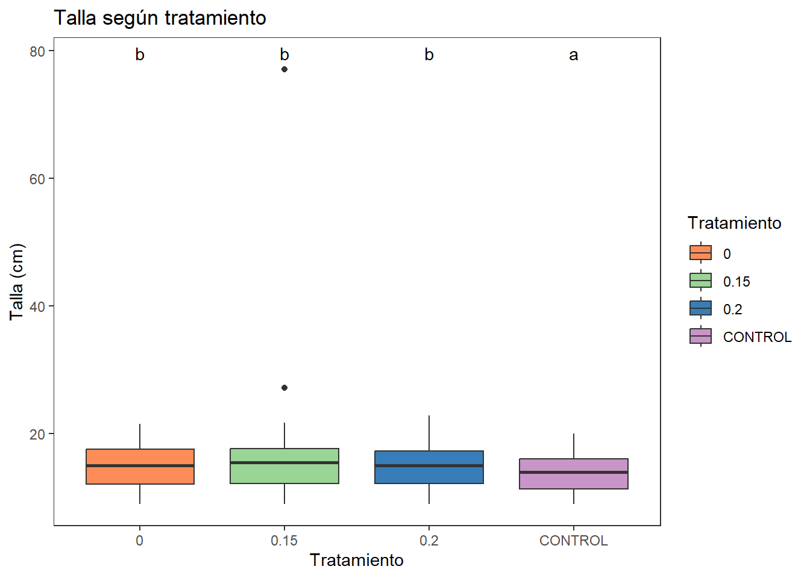
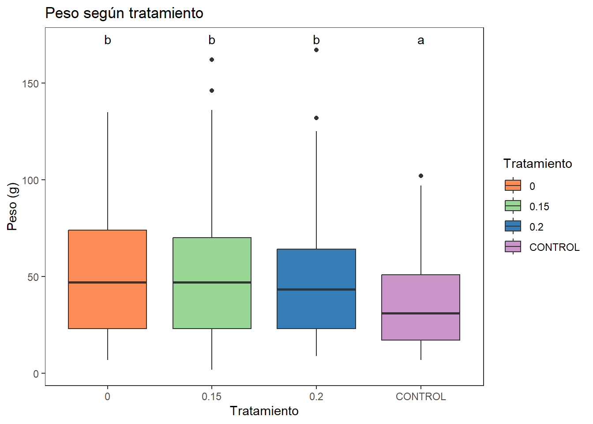
4.2 Gráfico de medias ± error estándar
Se muestra el problema del dato atípico en el tratamiento 0.15 (15%).
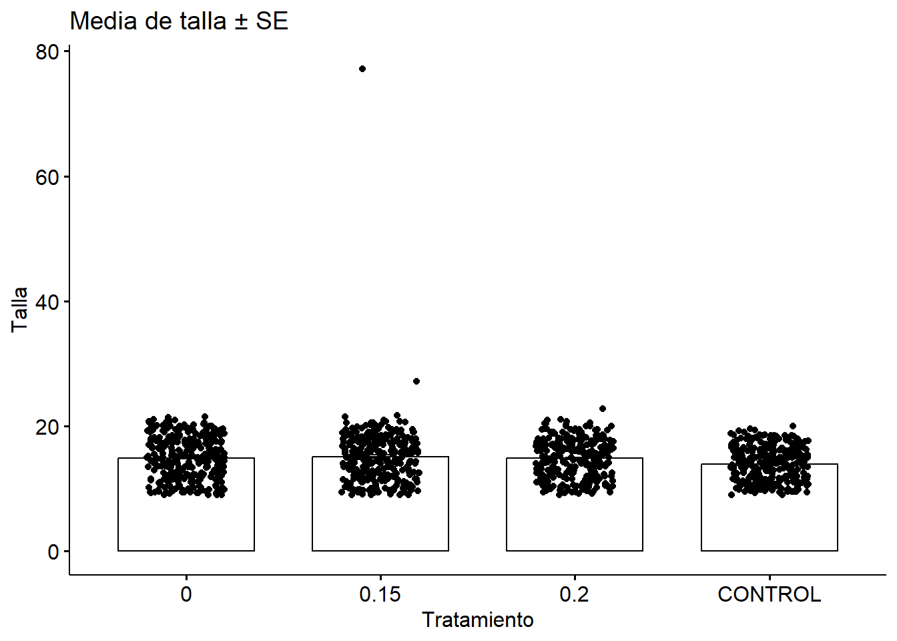
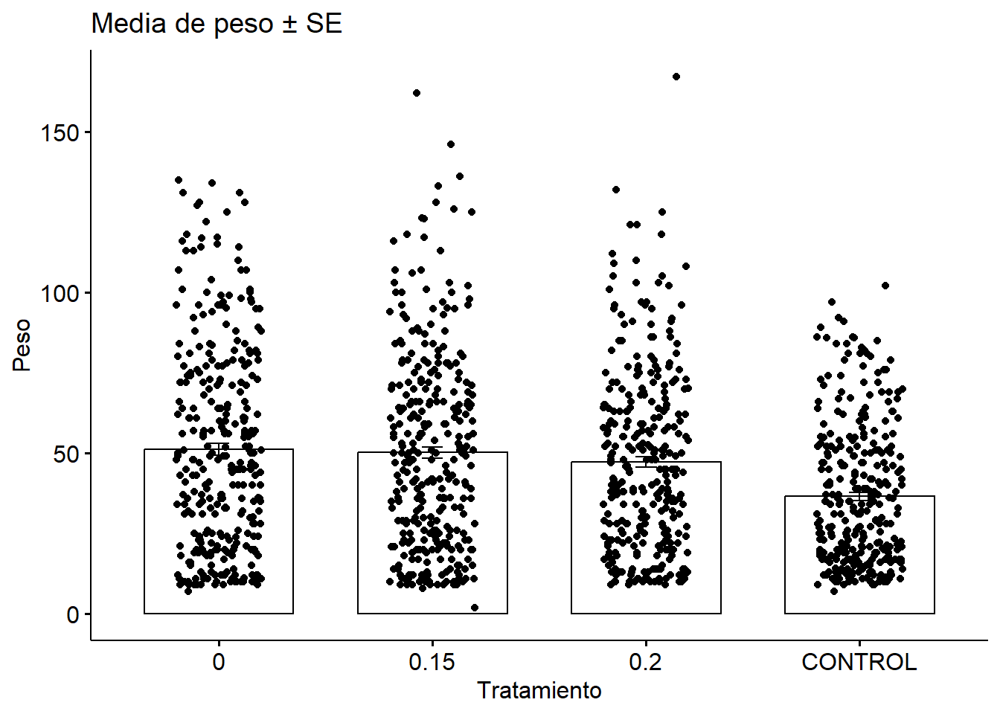
5. Tamaño del efecto (ges) con peso y talla
Cálculo del tamaño del efecto (η² generalizada, ges) para Talla y Peso.
El η² (eta al cuadrado) se calcula en el ANOVA para cuantificar el tamaño del efecto del factor bajo estudio; esto es, la proporción de la varianza total de la variable respuesta (talla o peso) que se atribuye a las diferencias entre los niveles del factor (tratamiento). Si el ANOVA arroja un η² pequeño, la potencia resultante será baja (< 0.8), por lo que se necesitará aumentar el tamaño de muestra o optimizar el diseño para detectar el efecto con confianza.
ges es el tamaño del efecto (η² generalizada). Interpreta valores de η² como:
~0.01 = pequeño,
~0.06 = mediano,
~0.14 = grande.
Para el caso de las tallas ges: 0.018 indica un efecto pequeño y para el peso ges: 0.04 que indica un efecto mediano.
Forma resumida de visualizar F, p y η² para Talla y Peso.
| Variable | DFn | DFd | F | p | ges | magnitude |
|---|---|---|---|---|---|---|
| Talla | 3 | 1244 | 7.589 | 4.96e-05 | 0.018 | Pequeño |
| Peso | 3 | 1244 | 17.264 | 0.00e+00 | 0.040 | Mediano |
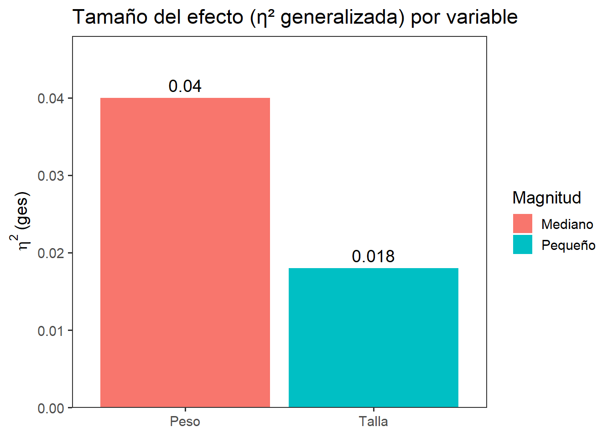
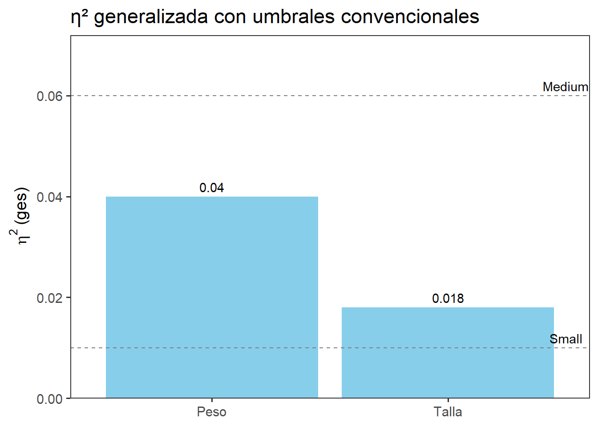
Para el caso de la talla, Un η²g ≈ 0.018 significa que sólo el 1.8 % de la variación total en la talla de los juveniles se explica por los distintos niveles de inclusión de S. cymosum. Según las convenciones de Cohen esto se considera un efecto pequeño, lo cual implica:
Aunque el ANOVA mostró diferencias significativas, un cambio tan pequeño podría no traducirse en una diferencia de talla que sea práctica o relevante para el rendimiento productivo esperado.
Para confirmar o refutar este pequeño efecto, sería conveniente aumentar el tamaño de la muestra (más réplicas o más peces por réplica) o incluir covariables (por ejemplo temperatura, salinidad, etc.) en un modelo mixto, para reducir la variabilidad residual y mejorar la potencia.
Para el caso del peso, Un η²g ≈ 0.04 indica que el 4 % de la variación en peso está explicado por el tratamiento. Esto se clasifica como un efecto mediano. Un 4 % puede ser perceptible y de interés cuando el peso es el objetivo primario de producción. Se aconseja poner énfasis en el peso como métrica de crecimiento sensible al suplemento de S. cymosum. Aunque más prometedor que la talla, sigue siendo un efecto moderado, por lo que optimizar dosis, tiempos de exposición y seguimiento o la forma de presentación de la alga podría incrementar su impacto.
Finalmente, para futuros ensayos se sugiere (1) aumentar la replicación (réplicas y número de peces). (2) Controlar mejor las fuentes de variabilidad (variables ambientales). Incluir covariables en un modelo mixto o ANCOVA para mejorar la precisión.
Tambien se puede Complementar con otras métricas de crecimiento derivadas como el Índice de condición (K = 100 × Peso / Talla³) o la tasa de crecimiento relativa diaria, las cuales pueden pueden revelar efectos más sensibles al tratamiento.
6. Tamaño del efecto con índice de condición - K
En este sentido, la inclusión de S. cymosum explica casi un 10 % de la variación en el índice de condición (K), frente a sólo 1–4 % en talla o peso. K refleja la “corpulencia” o estado nutricional relativo (energías y reservas) de los peces. Un gran efecto aquí indica que el suplemento de Sargassum mejora sustancialmente la condición corporal, posiblemente por mayor retención de proteínas o lípidos.
En este sentido se sugiere priorizar a K como la variable respuesta de crecimiento o nutrición. Si K aumenta notoriamente con la concentración actual de harina de S. cymosum, probar niveles menores o mayores para delimitar la curva dosis-respuesta. Un efecto grande a corto plazo sugiere que K podría seguir aumentando o estabilizarse; se sugiere aumentar el tiempo del experimento para ver la dinámica temporal de la condición - K.
También se puede probar un Modelo mixto sobre K, para incluir “Réplica” como efecto aleatorio y ver si aporta variabilidad.
| Tratamiento | n | media_K | sd_K |
|---|---|---|---|
| 0 | 313 | 1.324732 | 0.1143746 |
| 0.15 | 313 | 1.305536 | 0.1765966 |
| 0.2 | 308 | 1.263938 | 0.0980117 |
| CONTROL | 314 | 1.213318 | 0.1166998 |
| Effect | DFn | DFd | F | p | p<.05 | ges |
|---|---|---|---|---|---|---|
| Tratamiento | 3 | 1244 | 45.246 | 0 | * | 0.098 |
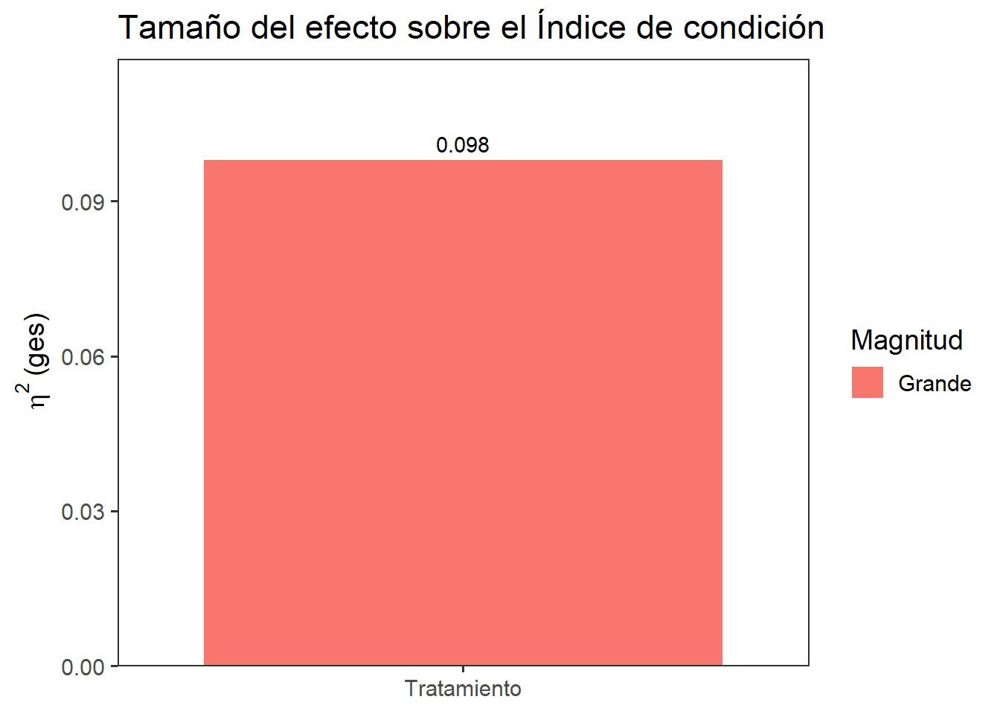
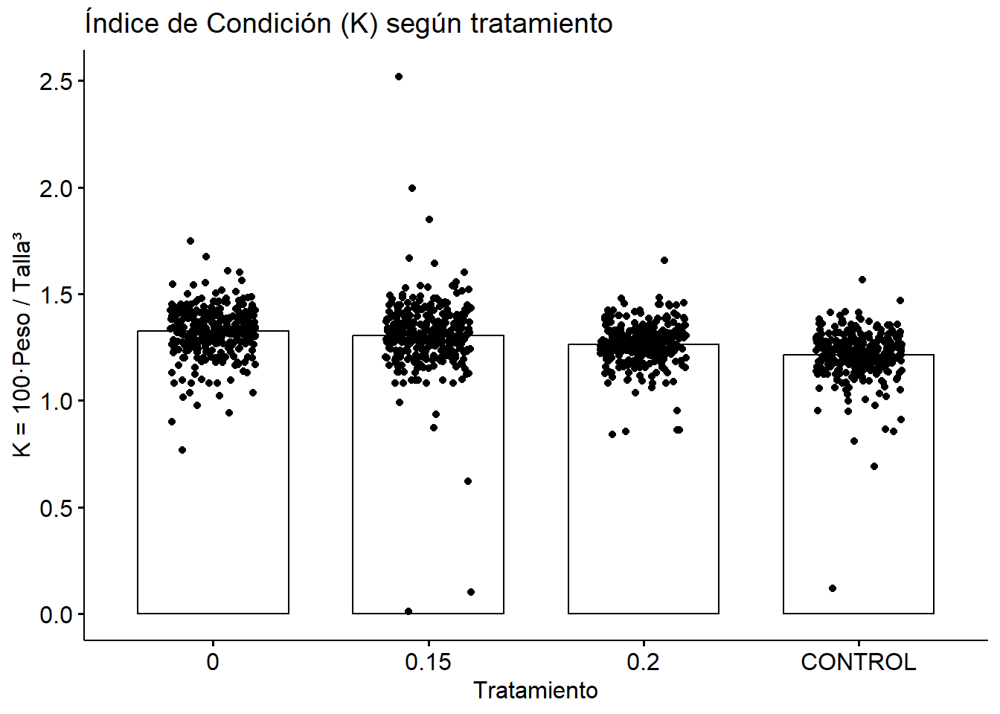
7. Modelo de efectos mixtos con índice de condición K
[1] FALSE Groups Name Std.Dev.
Réplica (Intercept) 0.0060797
Residual 0.1296484El efecto de “Réplica” es prácticamente nulo o cero: aportando muy poca explicación de la variabilidad en el Índice de Condición - K. en este sentido, con este modelo mixto no se gana precisión sustancial unsando Ráplicas como el término aleatorio.
En este sentido se sugiere Eliminar “Réplica” y usar un ANOVA clásico (
aov(K ~ Tratamiento)), Incluir “Réplica” como factor fijo en un modelo lineallm(K ~ Tratamiento + Replica), “bloqueando” el pequeño efecto de las replicas.Dado que casi toda la variación está en el residual, un ANOVA a una vía sobre K podría dar resultados más sencillos de interpretar.
8. Modelo de efectos mixtos con peso y talla
Asumiendo a replicas como un factor aleatorio. Modelos lineales mixtos para Talla y Peso, considerando “Réplica” como efecto aleatorio (intercepto). Iniciamos con un diagnóstico rápido de singularidad de las Réplicas.
[1] TRUE Groups Name Std.Dev.
Réplica (Intercept) 0.0000
Residual 3.6032 La varianza estimada para el efecto aleatorio Replica es esencialmente cero. En otras palabras, el modelo no “necesita” ese término aleatorio porque toda la variación viene del residual. Por esta razón, no es necesario el modelo mixto y se puede volver al ANOVA simple o su opción no paramétrica Kruskal Wallis.
9. ANOVA de condición K
1. Preparación de datos
2. Estadística descriptiva
| Tratamiento | n | prom_K | desv_K |
|---|---|---|---|
| 0 | 313 | 1.324732 | 0.1143746 |
| 0.15 | 313 | 1.305536 | 0.1765966 |
| 0.2 | 308 | 1.263938 | 0.0980117 |
| CONTROL | 314 | 1.213318 | 0.1166998 |
3. Pruebas de supuestos
3.1 Normalidad de residuos
# A tibble: 1 × 3
variable statistic p.value
<chr> <dbl> <dbl>
1 residuals(mod_K) 0.821 3.62e-353.2 Homogeneidad de varianzas
Levene's Test for Homogeneity of Variance (center = median)
Df F value Pr(>F)
group 3 7.2896 7.576e-05 ***
1244
---
Signif. codes: 0 '***' 0.001 '**' 0.01 '*' 0.05 '.' 0.1 ' ' 13.3 Independencia
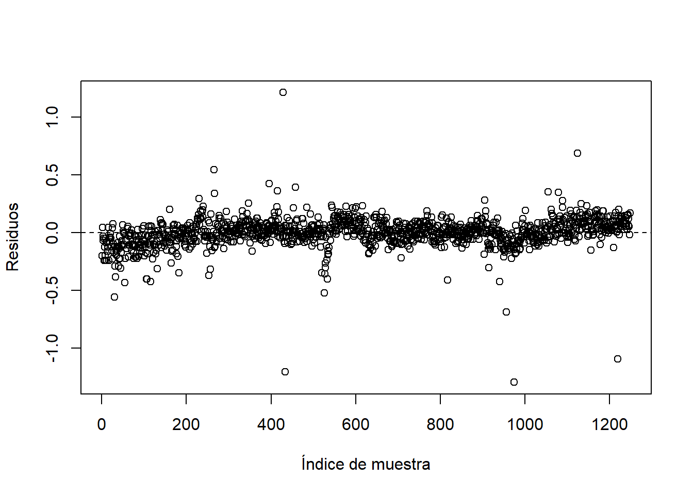
4. ANOVA a una vía y post-hoc de Tukey
Df Sum Sq Mean Sq F value Pr(>F)
Tratamiento 3 2.294 0.7646 45.25 <2e-16 ***
Residuals 1244 21.023 0.0169
---
Signif. codes: 0 '***' 0.001 '**' 0.01 '*' 0.05 '.' 0.1 ' ' 1# Effect Size for ANOVA (Type I)
Parameter | Eta2 | 95% CI
---------------------------------
Tratamiento | 0.10 | [0.07, 1.00]
- One-sided CIs: upper bound fixed at [1.00]. Tukey multiple comparisons of means
95% family-wise confidence level
Fit: aov(formula = K ~ Tratamiento, data = df)
$Tratamiento
diff lwr upr p adj
0.15-0 -0.01919632 -0.04592890 0.007536264 0.2517331
0.2-0 -0.06079450 -0.08763536 -0.033953647 0.0000000
CONTROL-0 -0.11141426 -0.13812555 -0.084702971 0.0000000
0.2-0.15 -0.04159818 -0.06843904 -0.014757327 0.0004115
CONTROL-0.15 -0.09221794 -0.11892923 -0.065506651 0.0000000
CONTROL-0.2 -0.05061976 -0.07743941 -0.023800108 0.00000815. Visualización de resultados
5.1 Boxplot + letras de Tukey (rstatix + ggpubr)
| term | group1 | group2 | null.value | estimate | conf.low | conf.high | p.adj | p.adj.signif |
|---|---|---|---|---|---|---|---|---|
| Tratamiento | 0 | 0.15 | 0 | -0.0191963 | -0.0459289 | 0.0075363 | 2.52e-01 | ns |
| Tratamiento | 0 | 0.2 | 0 | -0.0607945 | -0.0876354 | -0.0339536 | 0.00e+00 | **** |
| Tratamiento | 0 | CONTROL | 0 | -0.1114143 | -0.1381256 | -0.0847030 | 0.00e+00 | **** |
| Tratamiento | 0.15 | 0.2 | 0 | -0.0415982 | -0.0684390 | -0.0147573 | 4.11e-04 | *** |
| Tratamiento | 0.15 | CONTROL | 0 | -0.0922179 | -0.1189292 | -0.0655067 | 0.00e+00 | **** |
| Tratamiento | 0.2 | CONTROL | 0 | -0.0506198 | -0.0774394 | -0.0238001 | 8.10e-06 | **** |
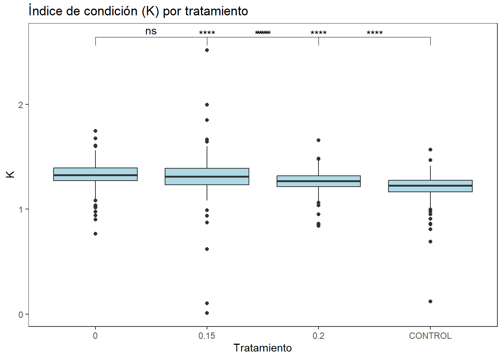
10. Kruskal Wallis
Como no se cumplen ni la normalidad ni la homogeneidad de varianzas, la prueba de Kruskal–Wallis es la alternativa no-paramétrica al ANOVA a una vía.
# A tibble: 1 × 6
.y. n statistic df p method
* <chr> <int> <dbl> <int> <dbl> <chr>
1 K 1248 202. 3 1.41e-43 Kruskal-Wallis1. Post-hoc con Dunn y corrección
| .y. | group1 | group2 | n1 | n2 | statistic | p | p.adj | p.adj.signif |
|---|---|---|---|---|---|---|---|---|
| K | 0 | 0.15 | 313 | 313 | -2.744077 | 0.0060681 | 0.0364088 | * |
| K | 0 | 0.2 | 313 | 308 | -7.532087 | 0.0000000 | 0.0000000 | **** |
| K | 0 | CONTROL | 313 | 314 | -13.220930 | 0.0000000 | 0.0000000 | **** |
| K | 0.15 | 0.2 | 313 | 308 | -4.799079 | 0.0000016 | 0.0000096 | **** |
| K | 0.15 | CONTROL | 313 | 314 | -10.474666 | 0.0000000 | 0.0000000 | **** |
| K | 0.2 | CONTROL | 308 | 314 | -5.629472 | 0.0000000 | 0.0000001 | **** |
2. Tamaño del efecto no-paramétrico
Se obtiene ε² (epsilon-cuadrado), que indica la proporción de varianza explicada en el contexto no paramétrico. El ε² es análoga al η² en ANOVA. Es un índice de magnitud de efecto no paramétrico asociado al test de Kruskal–Wallis. Su propósito es cuantificar qué proporción de la variabilidad total de las posiciones (ranks) de la variable respuesta (K), se explica por el factor de tratamiento.
ε² ≈ 0.16 significa que aproximadamente el 16 % de la variabilidad de los rangos del Índice de Condición K se explica por el tratamiento con distintas dosis de S. cymosum. Con ε² ≈ 0.1601 está en el rango de efecto grande. Según convenciones similares a Cohen:
< 0.01: efecto pequeño
0.01–0.06: efecto mediano
> 0.14: efecto grande
Un 16 % de varianza explicada en un test no paramétrico es sustancial: el tratamiento con harina de S. cymosum tiene un impacto claro y notable sobre la condición corporal de los peces.
Dado que Kruskal–Wallis compara distribuciones de rangos, un gran ε² indica que no es sólo un par de valores extremos los que diferencian grupos, sino un cambio consistente en la posición central de los datos.
Esto confirma de forma cuantitativa que la inclusión de Sargassum cymosum en la dieta explica una proporción importante de la variación en el Índice de Condición, respaldando su potencial como suplemento nutricional en la acuicultura de Brycon moorei.
# A tibble: 1 × 5
.y. n effsize method magnitude
* <chr> <int> <dbl> <chr> <ord>
1 K 1248 0.160 eta2[H] large 4. Visualización
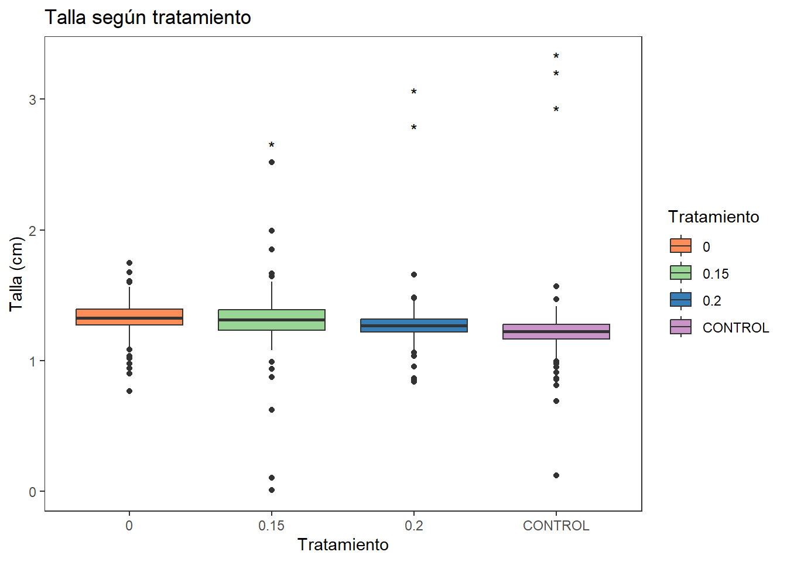